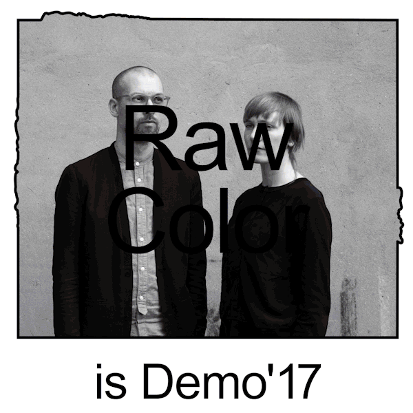
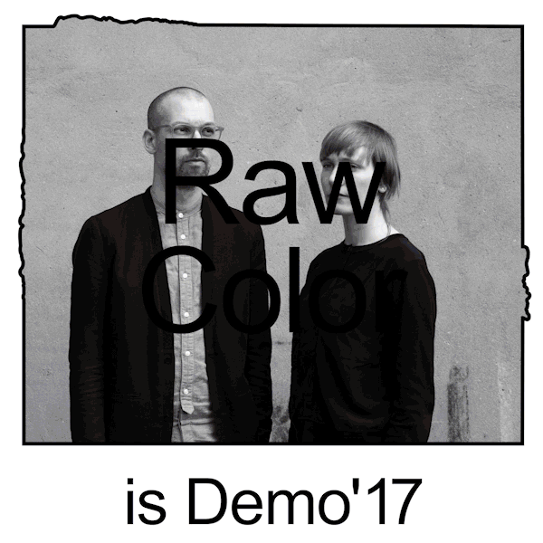
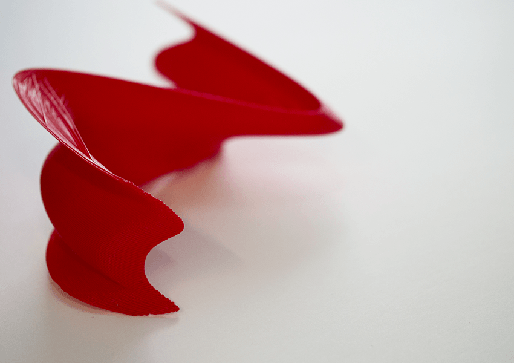
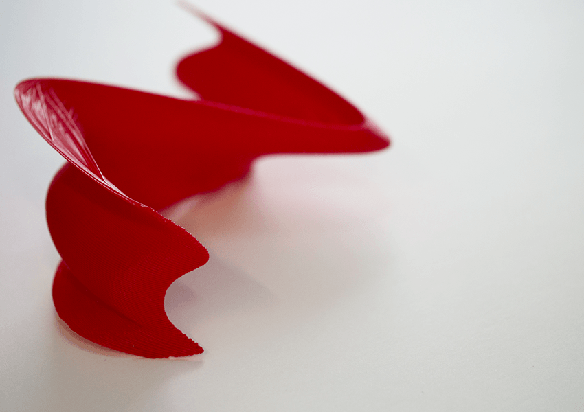

Lettres libérées
Avec l'idée de libérer la forme typographique plus que le sens d'une phrase, j'ai utilisé
la technique du morphing. Par la suite, j'ai obtenu un répertoire de lettres mutantes, qui se détachent progressivement de leur forme
connue de départ. Elles sont ensuite déclinées sur plusieurs supports : vidéo, web, pochoirs, 3D.
Typographie : Stanley Poster — 11/2017
<——


Demo — Stage chez
Raquel Quevedo
Identité pour le festival de design "Understanding design" à Barcelone. La structure de sel a été l'origine de toute la communication du festival (flyers, gif, film, poster).
Typographie : Arial — 04/2017
<——
 

Court-circuit
En se basant sur plusieurs objets de notre quotidien fonctionnant avec un cryptage (tel que le ticket de métro,
la carte SD, la puce, les métiers à tisser Jacquards...) j'ai réinterprété les formes graphiques de ces codes pour créer
de nouveaux objets court-circuitant les codes déjà existants.
11/2016
<——
Despues del fin del mundo — Stage chez
Raquel Quevedo
Identité et animations créées pour l'exposition au CCCB se questionnant sur
notre impact sur l'environnement et l'évolution future de notre planète. Scénographie de Guillermo Santoma.
Typographies : Stanley Poster & *** — 07/2017
<——

Poster
Images créées à la manière de Tyler Spangler, combinant des photos de nus et illustrations numériques.
10/2015
<——
SoundEat #1 — Stage chez
Raquel Quevedo
Visuels et animations créés pour le festival SoundEat à Barcelone.
Typographie : Apercu — 06/2017
<——


Top chef
Atelier d’après plusieurs caractéristiques de plats « glacé —
âpre — velouté — doux — enrobé ». J’ai cherché à représenter
graphiquement des sensations liées à la nourriture. Chaque élément
est traité comme une tapas et est élaboré grâce à une recette.
12/2017
<——


 
